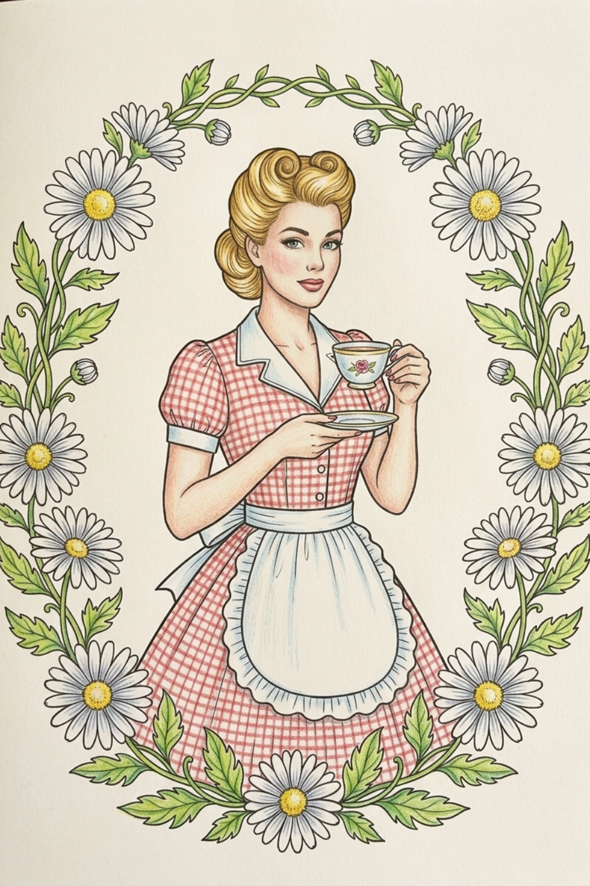

Classic Pick

✦ Adult Coloring Book
Vintage Fashion Adult Coloring Book
Timeless women's fashion designs, relaxing flower patterns, and vintage floral dresses. A sophisticated creative escape celebrating the elegance of classic style.
- Vintage floral dress illustrations
- Relaxing botanical patterns
- All coloring media welcome
- Gift-ready presentation